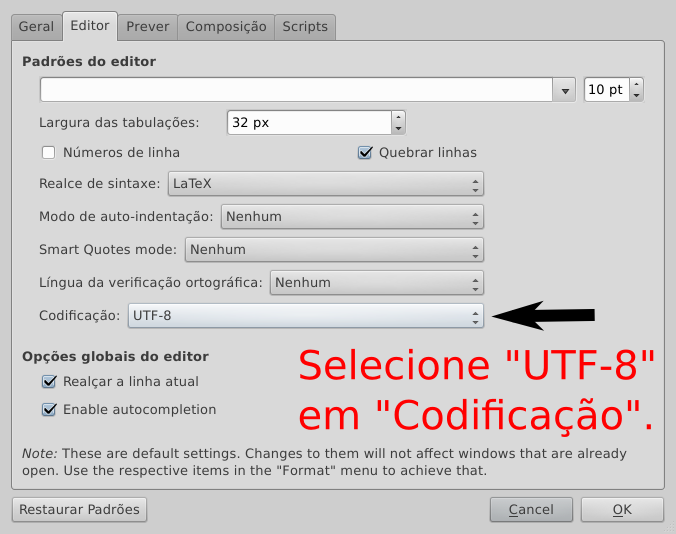
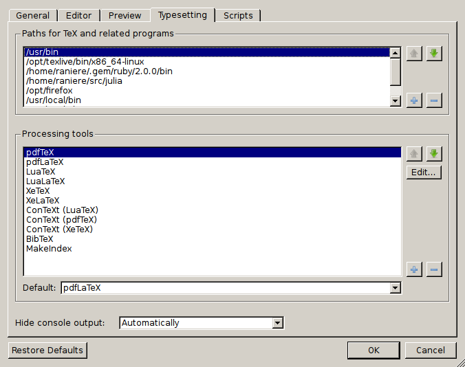
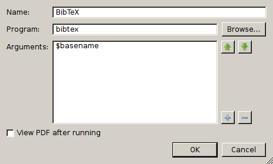

Configuração do TeXworks (versão 0.5 r.952) para uso do do modelo de dissertação/tese do IMECC
Ao abrir o TeXworks, você encontrará uma janela semelhante a figura abaixo.

Verifique na barra inferior (de status) se a codificação utilizada é a UTF-8 (ver figura acima). Se a codificação utilizada for a UTF-8, você pode ir para a seção Configuração do documento mestre.
Configuração da codificação
Caso a codificação utilizada seja outra que não a UFT-8, selecione "Editar" -> "Preferências..." e irá aparecer uma janela semelhante a figura abaixo..
Na aba "Editor", selecione UTF-8 para o parâmetro "Codificação". Depois pressione o botão "OK".
Configuração do documento mestre
O documento mestre do modelo de dissertação/tese do IMECC é tese.tex. Para facilitar o uso do modelo, recomenda-se que o editor seja configurado para tratar o arquivo tese.tex como o documento mestre.
O TeXworks não possui a funcionalidade de projeto, entretanto ele
reconhece algumas instruções presentes nas primeiras linhas do arquivo
atual. Em todos os arquivos .tex que pertencerem a sua
dissertação/tese você deverá colocar na primeira linha
% !TEX root = tese.tex
Veja na figura abaixo como deve ficar o seu arquivo tese.tex,
Trocando o bibtex pelo biber
Na versão mais atual do modelo utilizamos o pacote biblatex para as referências bibliográficas. Esse pacote deve ser preferencialmente utilizado com o biber, o substituto do bibtex. O TeXworks não vem configurado por padrão para utilizar o biber e por isso você deve seguir os passos a seguir para não ter problemas ao utilizar o modelo.
Selecione "Editar" -> "Preferências..." -> "Composição" e irá aparecer uma janela semelhante a ilustrada abaixo.
Na caixa inferior selecione BibTeX e pressione o botão "Editar" ao lado. Irá surgir uma janela como a indicada abaixo.
No campo "Programa" substitua bibtex por biber e pressione o botão "OK". Feche a janela e a configuração foi concluída.
Escrito e mantido por Raniere Silva.